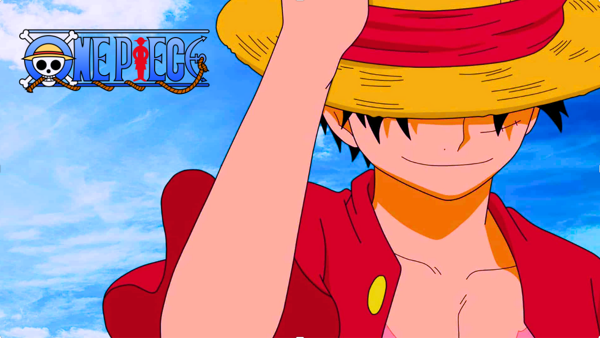
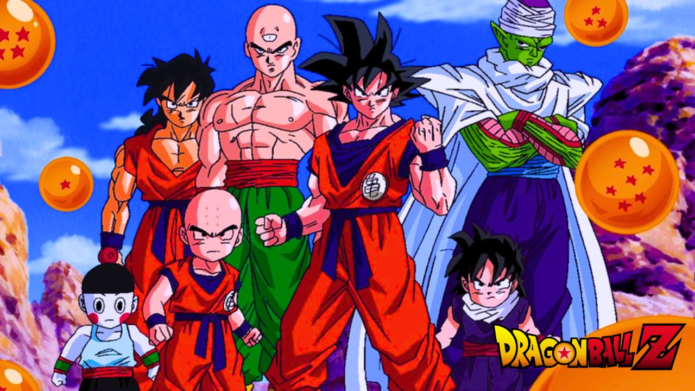

HISTORIA DE NARUTO UZUMAKE
Venha conhecer mas sobre Naruto Uzumake!

EM BARQUE NA JORNADA DE LUFFY
Veja a jornada de luffy, atrás de se torna o rei dos piratas.

ENTRE NO UNIVERSO DE DRAGON BALL
Conheça a historia de Goku, com suas transformações incriveis.